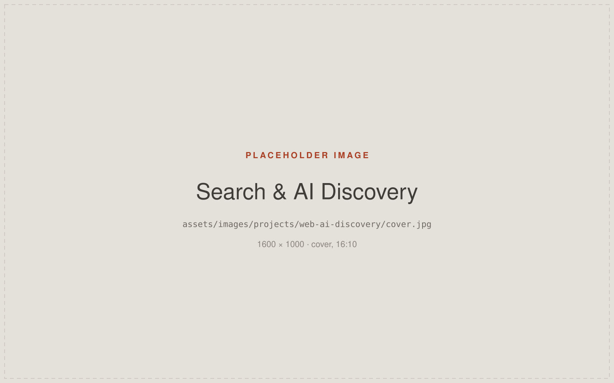
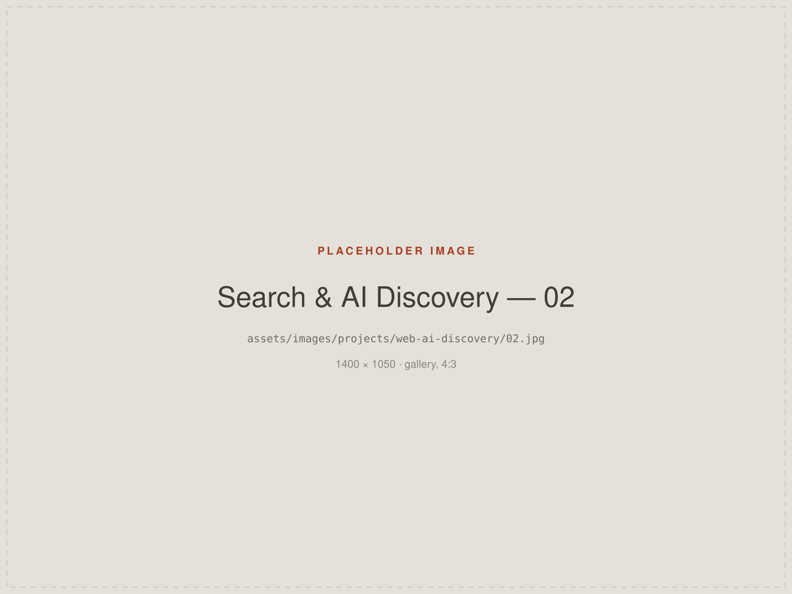

Designing for Search and AI Discovery
Exploring how websites can be structured for traditional search while adapting to emerging AI-driven discovery experiences.
- Role
- Digital Marketing Executive — SEO, web strategy and research
- Organisation
- Virtuoso Optoelectronics Limited (VOEPL)
- Disciplines
- SEO · Web Strategy · AEO Research
- Nature of the work
- Ongoing optimisation work plus independent research — not a finished product

Context
How people find websites is changing. Alongside conventional search results, answers are increasingly assembled by AI systems that read and summarise pages rather than simply listing them.
Working on SEO and technical optimisation for a corporate website made this a practical question rather than an abstract one: what does a site need to look like structurally to be understood by both?
This page is honest about its own scope. It documents optimisation work I carried out and research I have been doing — not a claim to expertise in a field that is still forming.
Challenge
Traditional SEO practice assumes a human clicks a result and lands on a page. AI-mediated discovery does not guarantee that click — the content may be read, summarised and cited without a visit.
That shifts what matters. Clear structure, unambiguous content and machine-readable meaning start to count for more than tactics aimed purely at ranking position.
Role
- SEO support and implementation
- Sitemap structure
robots.txtconfiguration- Technical website optimisation
- Content structure
- Research into AI search visibility
- Answer Engine Optimisation (AEO)
- Research into LLM discovery strategy
Approach
Start with structure
Sitemap and information hierarchy first. A site whose structure reflects how its subject actually divides up is easier for both crawlers and readers.
Make meaning explicit
Headings that describe content rather than decorate it, semantic markup, and metadata that says what a page genuinely is. This is the part that overlaps most directly with design: the structure a designer builds is the structure a machine reads.
Get the technical basics right
robots.txt, canonical URLs, crawlability and performance
— the unglamorous layer that determines whether anything else has a
chance of working.
Research openly
AEO and LLM discovery are moving quickly and the established practices are not settled. My position is to keep reading, testing on real sites, and stay sceptical of confident claims — including my own.
Applied here
This portfolio is built the way the research suggests: semantic HTML,
a real heading hierarchy, canonical URLs, structured data, a sitemap
and a robots.txt.
Selected work
Placeholders below. Diagrams of site structure and content hierarchy
communicate this work better than interface screenshots — see
ASSETS.md.

Outcome
Outcome to be provided. No traffic, ranking or visibility figures are published here, because none have been verified.